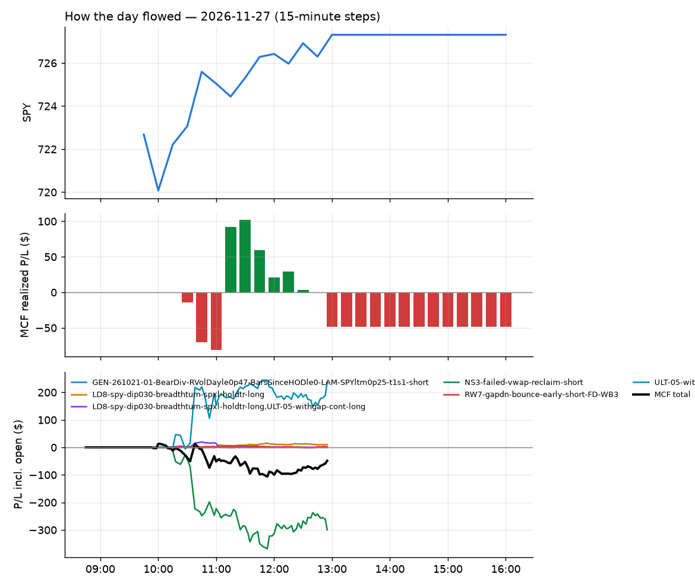
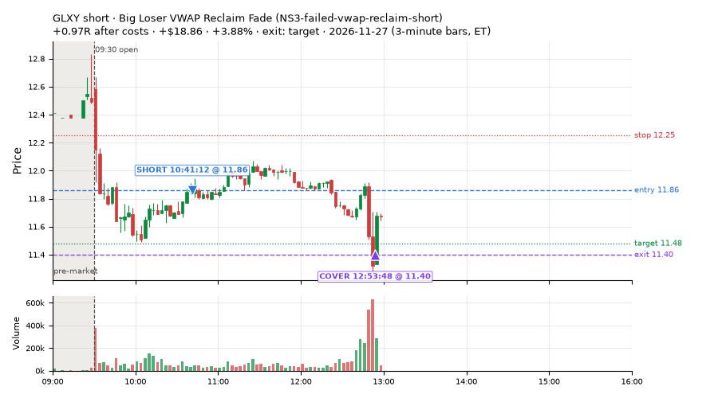
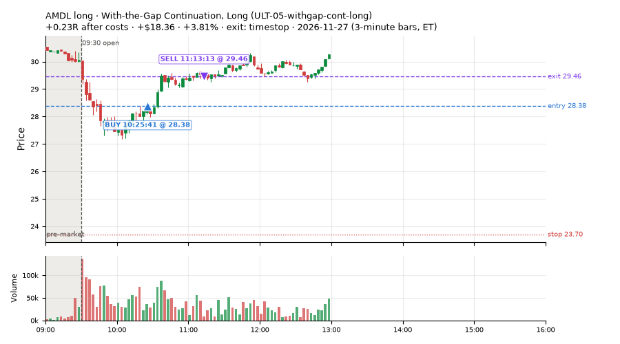
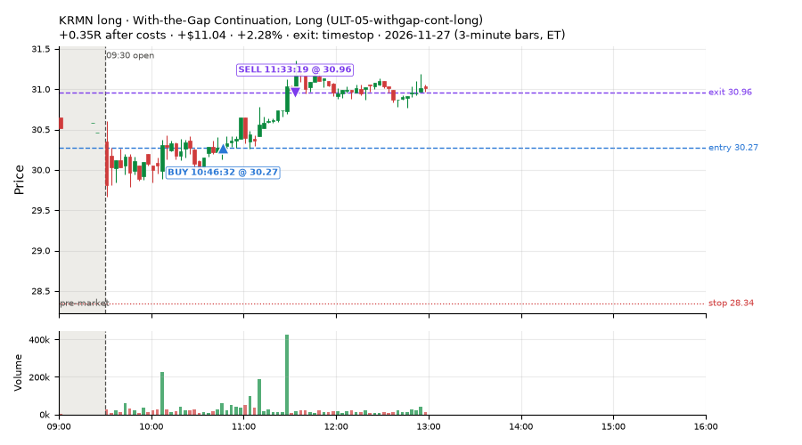
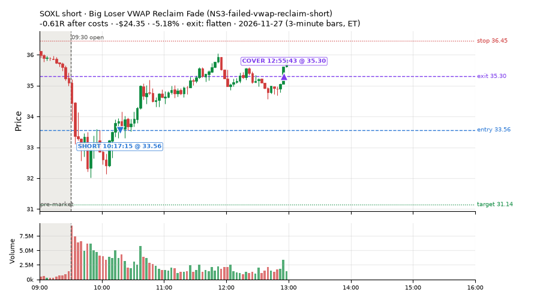
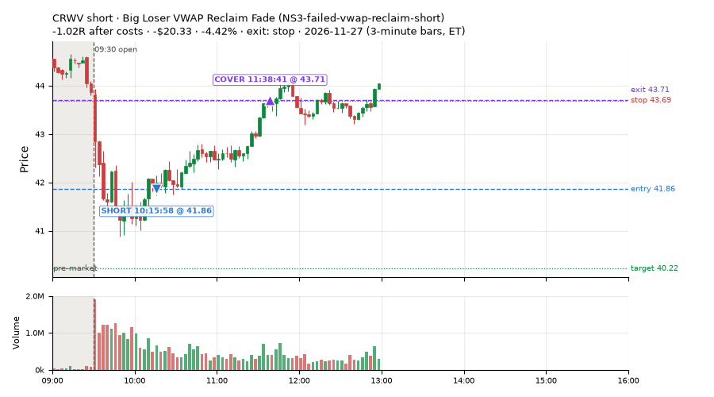
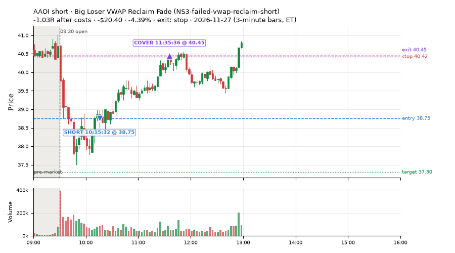
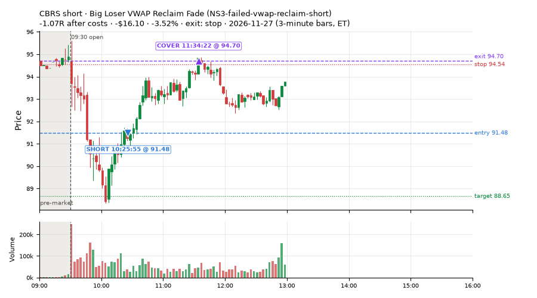
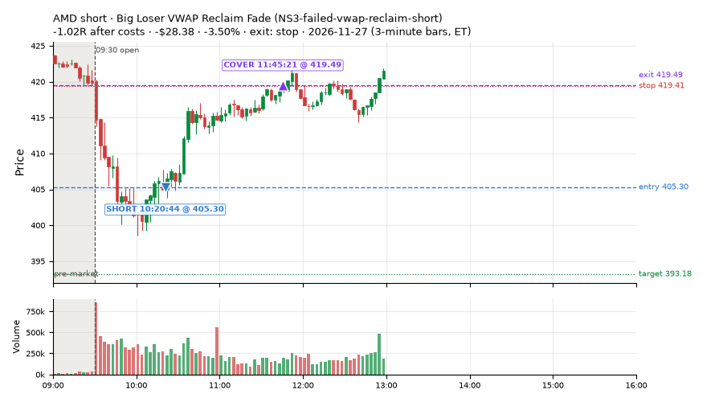

157 trades · win rate 59% · P/L $-48.62
PROBATION: no live setup has passed both locked test periods. 10 owner-directed setups added 2026-10-08 (MarcoFlow top 5 + 5 new), untested live. RW6G1 (RW6 + VWAP band guard) added 2026-10-09, probation.

| Symbol | Setup | Side | In | Out | Entry | Exit | Exit reason | % gained | P/L |
|---|---|---|---|---|---|---|---|---|---|
| GLXY | Big Loser VWAP Reclaim Fade (NS3-failed-vwap-reclaim-short) | short | 10:41 | 12:53 | 11.86 | 11.40 | target | +3.88% | $18.86 |
| AMDL | With-the-Gap Continuation, Long (ULT-05-withgap-cont-long) | long | 10:25 | 11:13 | 28.38 | 29.46 | timestop | +3.81% | $18.36 |
| KRMN | With-the-Gap Continuation, Long (ULT-05-withgap-cont-long) | long | 10:46 | 11:33 | 30.27 | 30.96 | timestop | +2.28% | $11.04 |
| Symbol | Setup | Side | In | Out | Entry | Exit | Exit reason | % lost | P/L |
|---|---|---|---|---|---|---|---|---|---|
| SOXL | NS3-failed-vwap-reclaim-short | short | 10:17 | 12:55 | 33.56 | 35.30 | flatten | -5.18% | $-24.35 |
| CRWV | NS3-failed-vwap-reclaim-short | short | 10:15 | 11:38 | 41.86 | 43.71 | stop | -4.42% | $-20.33 |
| AAOI | NS3-failed-vwap-reclaim-short | short | 10:15 | 11:35 | 38.75 | 40.45 | stop | -4.39% | $-20.40 |
| CBRS | NS3-failed-vwap-reclaim-short | short | 10:25 | 11:34 | 91.48 | 94.70 | stop | -3.52% | $-16.10 |
| AMD | NS3-failed-vwap-reclaim-short | short | 10:20 | 11:45 | 405.30 | 419.49 | stop | -3.50% | $-28.38 |








Signal to fill: median 1s, 90th percentile 3s (157 trades). Bars close each minute; the order follows the bar close.
Best excursion (MFE): median 0.19R; worst (MAE) median 0.13R. 61% of trades never got +0.25R in our favour; 1 reached +1R and still closed at or below 0.
| Symbol | Setup | Best R | Worst R | Closed R |
|---|---|---|---|---|
| MU | NS3-failed-vwap-reclaim-short | +0.71 | -1.02 | -1.03 |
| AEIS | NS3-failed-vwap-reclaim-short | +1.06 | -0.78 | -0.46 |
| BE | NS3-failed-vwap-reclaim-short | +0.36 | -1.07 | -1.02 |
| RIOT | NS3-failed-vwap-reclaim-short | +0.22 | -1.11 | -1.12 |
| WULF | NS3-failed-vwap-reclaim-short | +0.16 | -1.05 | -1.12 |
| Entry time | Trades | Win | Avg R | P/L |
|---|---|---|---|---|
| 09:50-10:30 | 67 | 60% | -0.14 | $-110.47 |
| 10:30-11:30 | 36 | 67% | +0.04 | $53.57 |
| 11:30-13:00 | 54 | 52% | -0.02 | $8.28 |
| Setup | Trades | Win | Avg R after costs | Adj R (net of SPY) | Avg R ex-market (all sessions) | P/L |
|---|---|---|---|---|---|---|
| Generated: Late-AM Divergence Short (quiet) (GEN-261021-01-BearDiv-RVolDayle0p47-BarsSinceHODle0-LAM-SPYltm0p25-t1s1-short) | 1.0 | 100% | +0.03 | +0.31 | – | $0.24 |
| * SPY Dip of 0.30%, Breadth Turn (SPXL, trailing) (near-miss) (LD8-spy-dip030-breadthturn-spxl-holdtr-long) | 1.0 | 100% | +0.81 | +0.53 | – | $10.64 |
| Big Loser VWAP Reclaim Fade (NS3-failed-vwap-reclaim-short) owner-directed; holdouts once: Sep-Oct +0.119R n65, Apr-Jun -0.136R n524 | 33.0 | 18% | -0.55 | -0.39 | -0.02 (beta -1.15, n 94) | $-299.45 |
| Gap-Down Early Bounce Short (all day) — WB3: SPY-after-09:50 gates + gap < -0.5% + end 13:00 (RW7-gapdn-bounce-early-short-FD-WB3) | 3.0 | 33% | +0.15 | +1.07 | -0.14 (beta -0.61, n 154) | $2.68 |
| With-the-Gap Continuation, Long (ULT-05-withgap-cont-long) | 119.0 | 70% | +0.07 | +0.02 | -0.03 (beta +0.05, n 467) | $237.27 |
Market direction (SPY, beta 1) accounted for $7.47 of today's $-48.62; the rest ($-56.09) came from the setups themselves. Avg R net of SPY: -0.04 (incl. a hedge leg's cost; report only).
22 setups live today. Today: 307 signals, 157 taken, 25 lost because another setup held the symbol (8%). Since 2026-11-12 (11 sessions): 2550 signals, 1306 taken, 61 lost to other setups (2%). Peak open positions today 87 of 400 slots. Earnings blackout removed 138 symbols before scanning.
Simulated playing time (not live): 1244 what-if trades of signals not taken, avg -0.08R, 46% winners; of them 61 lost to another setup (avg -0.20R).
Silent: GEN-261021-10-MACDhge0p079-VWAPbarslem7-OPEN-QQQup-t1s05-long, LIQ-pdl-sweep-open15-vwap-long
| Prio | Setup | Today sig / taken | Sessions | Signals / taken / trades | Taken/day | Expected/day | Lost to other setups | Lost to (setup n) | Top skip reasons | SIMULATED: not-taken n / avg R / win | Verdict |
|---|---|---|---|---|---|---|---|---|---|---|---|
| 1 | Late-Day ETF Dip Buy — WB4: more dips (refire, looser DI, falling-hour guard) NM-ETF-late-dip-di-long-WB4 | 0 / 0 | 8 | 53 / 42 / 42 | 5.25 | – | 3 | GEN-261023-09-ORBfailDn-Ret15mge0p54-LATE-BRvwgt0p7-holdtr-short 2, NS3-failed-vwap-reclaim-short 1 | spread / quote / size 4, other 4, symbol held by another setup 3 | 11 / +0.10R / 55% | ok 26.2 entries/week |
| 2 | Gap-Down Early Bounce Short (all day) — WB3: SPY-after-09:50 gates + gap < -0.5% + end 13:00 RW7-gapdn-bounce-early-short-FD-WB3 | 5 / 3 | 8 | 212 / 154 / 154 | 19.25 | – | 1 | GEN-261028-09-FlowShiftlem0p65-ADX7le23-AM-BRoplt0p35-t05s1-long 1 | spread / quote / size 52, not shortable / shorts off 5, symbol held by another setup 1 | 58 / -0.26R / 38% | ok 96.2 entries/week |
| 3 | Monday Weak-RS NS3 Short (near-miss) — WB3: reclaim volume >= 0.45x, from 10:05 NM-RWN5-ns3-mon-weakrs-short-WB3 | 0 / 0 | 8 | 49 / 32 / 32 | 4.00 | – | 0 | – | spread / quote / size 11, other 4, not shortable / shorts off 2 | 17 / +0.09R / 47% | ok 20.0 entries/week |
| 4 | Generated: Lunch New-Low Short (selling) — WB1: down >= 1.3 ATR on the day GEN-261026-03-NewLOD-Flow3lem0p37-FromOpenATRlem0p78-LUNCH-BRopgt0p5-holdtr-short-WB1 | 0 / 0 | 8 | 5 / 4 / 4 | 0.50 | – | 0 | – | not shortable / shorts off 1 | 1 / +1.02R / 100% | slow 2.5 entries/week; ~24 weeks to 60 trades |
| 5 | NS2 Up-3 Short, QQQ Up, Slope Down (near-miss) NM-RWR4-ns2-up3-qqqup-slopedn-short | 0 / 0 | 5 | 6 / 5 / 5 | 1.00 | – | 0 | – | not shortable / shorts off 1 | 1 / +0.41R / 100% | slow 5.0 entries/week; ~12 weeks to 60 trades |
| 6 | Backside Lower-High Short (big runner) CWT04-backside-lh-a25-short | 0 / 0 | 11 | 2 / 0 / 0 | 0.00 | – | 0 | – | spread / quote / size 1, other 1 | 2 / -0.09R / 50% | slow no entries yet |
| 7 | Index Dip Bounce 5 3x S&P IDX5-spy050-0945-3x-trail | 0 / 0 | 11 | 2 / 2 / 2 | 0.18 | – | 0 | – | – | 0 / – | slow 0.9 entries/week; ~66 weeks to 60 trades |
| 8 | Generated: Late Uptrend Dip Buy (up day) GEN-261026-09-BBpctle0p3-SMA20slopege0p46-FromPCATRge0p45-LATE-BRvwgt0p6-t05s05-long | 0 / 0 | 4 | 16 / 5 / 5 | 1.25 | – | 0 | – | other 8, spread / quote / size 3 | 11 / +0.05R / 64% | slow 6.2 entries/week; ~10 weeks to 60 trades |
| 9 | Generated: PM New-Low Buy (strong mkt) GEN-261023-05-NewLOD-SMA20dlem0p94-ORLdistlem0p24-PM-BRopgt0p65-hold-long | 0 / 0 | 4 | 35 / 25 / 25 | 6.25 | – | 0 | – | spread / quote / size 5, other 5 | 10 / -0.48R / 20% | ok 31.2 entries/week |
| 10 | * SPY Dip of 0.30%, Breadth Turn (SPXL, trailing) (near-miss) LD8-spy-dip030-breadthturn-spxl-holdtr-long | 1 / 1 | 11 | 4 / 4 / 4 | 0.36 | – | 0 | – | – | 0 / – | slow 1.8 entries/week; ~33 weeks to 60 trades |
| 11 | Generated: Open Below-VWAP Turn Buy (QQQ up) GEN-261021-10-MACDhge0p079-VWAPbarslem7-OPEN-QQQup-t1s05-long | 0 / 0 | 4 | 0 / 0 / 0 | 0.00 | – | 0 | – | – | 0 / – | silent no signals in 4 session(s); no expected rate on file |
| 12 | Generated: PM Big Red Bar Buy (up day) GEN-261028-10-BarRngATRge0p18-Flow3lem0p54-FromPCATRge0p28-PM-SPYgt0p5-hold-long | 0 / 0 | 4 | 25 / 6 / 6 | 1.50 | – | 0 | – | spread / quote / size 11, other 8 | 19 / -0.20R / 53% | slow 7.5 entries/week; ~8 weeks to 60 trades |
| 13 | Generated: Late Failed-Breakdown Pop Short GEN-261023-09-ORBfailDn-Ret15mge0p54-LATE-BRvwgt0p7-holdtr-short | 0 / 0 | 4 | 72 / 45 / 45 | 11.25 | – | 0 | – | other 13, spread / quote / size 10, not shortable / shorts off 4 | 27 / -0.00R / 56% | ok 56.2 entries/week |
| 14 | Prior-Day Low Sweep Reversal to VWAP LIQ-pdl-sweep-open15-vwap-long | 0 / 0 | 6 | 0 / 0 / 0 | 0.00 | – | 0 | – | – | 0 / – | silent no signals in 6 session(s); no expected rate on file |
| 15 | Generated: Lunch Wide-Range Short (SPY down) GEN-261021-03-RSI5le34-Ret15mATRge0p12-DayRngVsPrevge1p2-LUNCH-SPYltm0p25-t05s1-short | 0 / 0 | 4 | 1 / 1 / 1 | 0.25 | – | 0 | – | – | 0 / – | slow 1.2 entries/week; ~48 weeks to 60 trades |
| 16 | Generated: Late-AM Divergence Short (quiet) GEN-261021-01-BearDiv-RVolDayle0p47-BarsSinceHODle0-LAM-SPYltm0p25-t1s1-short | 2 / 1 | 4 | 12 / 3 / 3 | 0.75 | – | 0 | – | spread / quote / size 5, other 4 | 9 / -0.13R / 44% | slow 3.8 entries/week; ~16 weeks to 60 trades |
| 17 | Generated: PM Lower-Band Dip Buy (uptrend) GEN-261019-02-BBpctle0p017-SMA20slopege0p46-PM-QQQdn-t05s1-long | 0 / 0 | 5 | 14 / 13 / 13 | 2.60 | – | 0 | – | spread / quote / size 1 | 1 / +0.37R / 100% | slow 13.0 entries/week; ~5 weeks to 60 trades |
| 18 | Generated: Late Pullback Buy (MACD rising) GEN-261027-01-MACDhge0p12-Ret15mATRlem0p069-LATE-BRvwgt0p5-t05s1-long | 0 / 0 | 11 | 62 / 28 / 28 | 2.55 | – | 0 | – | spread / quote / size 24, other 8, price through stop/target 2 | 34 / +0.09R / 68% | slow 12.7 entries/week; ~5 weeks to 60 trades |
| 19 | Generated: Open Up-Day Bounce Short GEN-261026-05-Ret15mATRge0p042-FromPCATRge0p28-ORHdistlem0p38-OPEN-BRopgt0p5-hold-short | 0 / 0 | 9 | 45 / 28 / 28 | 3.11 | – | 3 | ULT-05-withgap-cont-long 3 | spread / quote / size 10, symbol held by another setup 3, other 3 | 17 / +0.70R / 65% | ok 15.6 entries/week |
| 20 | Big Loser VWAP Reclaim Fade NS3-failed-vwap-reclaim-short | 90 / 33 | 11 | 213 / 94 / 94 | 8.55 | 3.03 | 19 | ULT-05-withgap-cont-long 18, IDX5-spy050-0945-3x-trail 1 | spread / quote / size 69, not shortable / shorts off 20, symbol held by another setup 19 | 119 / -0.16R / 34% | ok 42.7 entries/week |
| 21 | With-the-Gap Continuation, Long ULT-05-withgap-cont-long | 209 / 119 | 5 | 890 / 467 / 467 | 93.40 | – | 30 | NS3-failed-vwap-reclaim-short 25, NM-RWN5-ns3-mon-weakrs-short-WB3 11, GEN-261026-05-Ret15mATRge0p042-FromPCATRge0p28-ORHdistlem0p38-OPEN-BRopgt0p5-hold-short 10 | spread / quote / size 231, other 162, symbol held by another setup 30 | 423 / -0.01R / 49% | ok 467.0 entries/week |
| 22 | With-the-Gap Continuation, Short ULT-05-withgap-cont-short | 0 / 0 | 5 | 212 / 109 / 109 | 21.80 | – | 0 | – | spread / quote / size 80, not shortable / shorts off 23 | 103 / -0.23R / 41% | ok 109.0 entries/week |
Every trade is attached as a CSV you can open and edit in Excel or Google Sheets. Live page: https://misiti15.github.io/MCF/live/